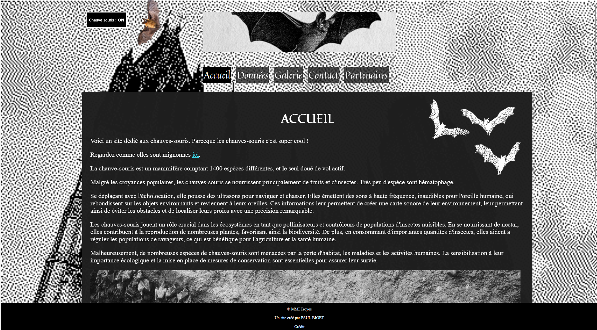
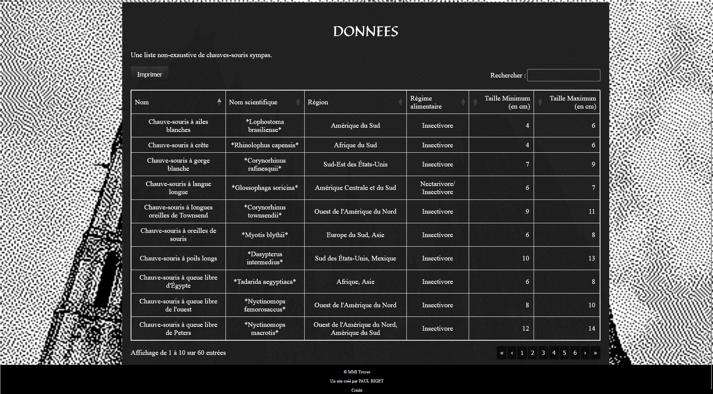
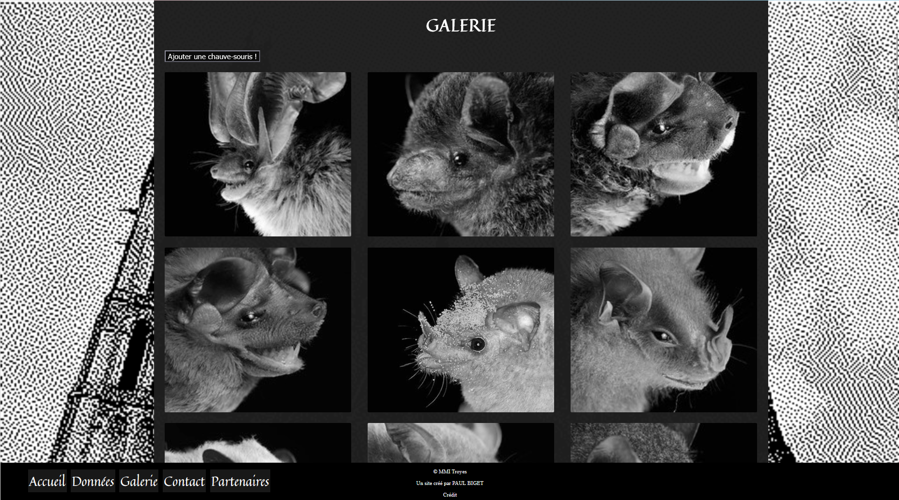
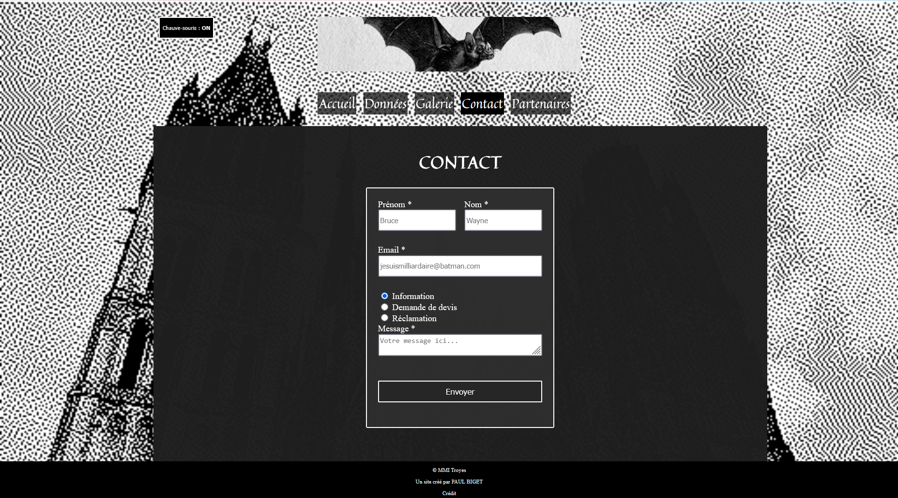

Site Web Statique.

L'accueil : Mise en place d'une navigation claire et d'une esthétique forte utilisant le contraste noir et blanc pour une immersion immédiate.
Le brief.
Réalisation d'un site multipage informatif dans le cadre de ma formation. L'objectif était de maîtriser la structure HTML sémantique tout en proposant un univers graphique cohérent et original.
Exploration de données.
Le projet inclut une gestion rigoureuse des tableaux et des formulaires, des éléments fondamentaux du web statique pour présenter des informations complexes de manière lisible.

Données structurées : Utilisation des balises <table> pour lister les différentes espèces. Un travail sur la lisibilité des données scientifiques.

Galerie immersive : Mise en page en grille mettant en avant la diversité des espèces via une iconographie soignée.

Interaction : Intégration d'un formulaire de contact complet (inputs, radio buttons, textarea).